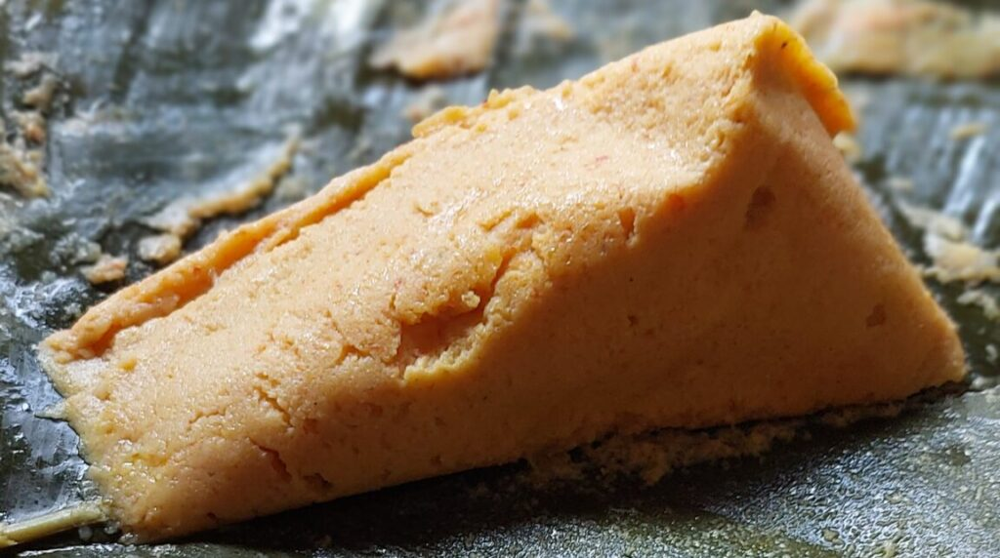

Nigerian Moinmoin

Description
Moinmoin is another Nigerian traditional beans based dish. It is made of steamed blended beans.
Home
Ingredients
Here is the list of ingredients needed to make Akara
Basic Ingredients (serves about 4-6):
- 2 cups peeled black-eyed peas (or brown beans)
- 1 medium onion (chopped)
- 2-3 red bell peppers (tatashe)
- 1-2 Scotch bonnet peppers (atarodo) – optional, for heat
- 1/4 - 1/2 cup vegetable oil (palm oil or groundnut oil, depending on preference)
- 2 seasoning cubes (e.g., Maggi or Knorr)
- Salt to taste
Optional Add-ins:
- Boiled eggs (sliced or whole)
- Sardines or mackerel (in oil or tomato sauce)
- Smoked fish (deboned and flaked)
- Minced meat (cooked and seasoned)
- (blended or whole, for deeper flavor)
For Wrapping/Steaming:
- Moin Moin leaves (Ewe Eran) - traditional method
- Aluminum foil, ramekins, or small containers - modern method
- Steaming pot with rack or steamer basket
Steps
Below are the steps for making Moinmoin:
- Peel the Beans:
- If not using pre-peeled beans, soak dry beans in water for 10-15 minutes.
- Rub the beans between your hands to remove the skins.
- Rinse several times until the skins are mostly gone.
- Drain and set aside.
- Blend the Mixture
In a high powered blender, combine:
- Peeled beans
- Red bell peppers
- Scotch bonnet (to taste)
- Onion
- Add just enough water or stock to blend to a smooth, thick batter (not watery!)
- Season the Batter
Pour blended batter into a mixing bowl and stir in:
- Salt (to taste)
- Seasoning cubes (e.g., 2 Maggi)
- Oil (vegetable or palm, 1/4 to 1/2 cup)
- Optional: Add blended crayfish for flavor
- Add Fillings (Optional)
- Mix in flaked mackerel, sardines, or minced meat.
- Drop slices of boiled egg or smoked fish into each container later when pouring.
- . Prepare Containers
Choose one of the following:
- Traditional Moin Moin leaves (ewe eran)
- Aluminum foil wraps
- Ramekins or small bowls
- Plastic containers (safe for steaming only)
Lightly oil the inside to prevent sticking.
- Pour the Batter
- Fill each container about 3/4 full.
- Add any extra boiled egg slices or meat on top if desired.
- Steam the Moinmoin
- In a large pot, add a rack or layer of foil at the bottom.
- Add water (not touching the wraps) and bring to a boil.
- Place Moinmoin containers into the pot.
- Cover pot tightly with a lid. You can also cover the top with foil or banana leaves before the lid
to trap steam.
- Check for Doneness
Insert a toothpick or skewer in the center — it should come out clean.
- Let It Cool Slightly
- Allow Moinmoin to set before removing from containers or wrapping.
- Serve warm or at room temperature.
Home